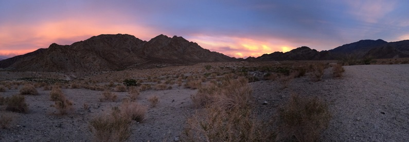

- Home |
- Blog |
- Lithography |
- Published Works |
- For Profit |
- About Chris
- | Gentleman
- | Scientist

La Quinta, CA, November 11-14, 2013
(The following diary appeared first as a blog at http://life.lithoguru.com/ and is reproduced here.)
I’ve just returned from a week in La Quinta, near Palm Springs, California. It is a desert of stark beauty: sand and mountains and incredible sunsets, out of which cities have risen, irrigating the desert into hiding. Palm trees and golf courses, adobe homes and strip malls, the grotesque surrounded by the sublime. And this week, a lithography conference as well.
The Lithography Workshop has been held every 18 months or so since 1981. I’ve attended about five of them (my first was in 1985 I think). They are purposefully modeled after the Gordon conferences, though they are more industrial than academic. There are presentations in the morning and in the evening, with afternoons free for socializing. They are always held in vacation destinations, and probably 20% of attendees come with their spouse.
Which is why the Lithography Workshop is commonly referred to as the Lithography Boondoggle. I suppose this nickname is deserved to certain extent, but the workshops are far from being a waste. This year there were 50 talks and about 15 posters, all of which were invited (I had a poster, but also subbed for a presenter who couldn't make it). As a result, the presenters are almost all seasoned experts, and a truly bad paper was hard to find. Without any publication of papers or presentations, the presenters are encouraged to be more open than they might otherwise be. Sure, some marketing messages crept into a few industry papers, and how can an ambitious academic help himself from indulging in self-promotion? Over all, though, the quality of the presentations was a noticeable step above most other conferences. That’s what makes it worthwhile to attend.
The downside of this all-invited format is an excessive abundance of establishment. Of the 120 attendees, a whopping six were women. I met two students, but almost everyone else looked like me – old and male and white. Granted, there is absolutely nothing wrong with looking like me (though one could aspire for better), I just don’t want everyone to look like me. It gets boring. But this is part of the nature of the Lithography Workshop. If I want to meet young, enthusiastic students I’ll go to the 3-beams conference. If I want to meet young, enthusiastic engineers just starting out in industry (as well as almost everyone else) I’ll go to the SPIE Advanced Lithography Symposium. But for a small conference full of senior lithographers, you can’t beat the Lithography Workshop.
The four plenary talks were all quite good. I especially liked hearing about Intel’s silicon photonics efforts (about to be commercialized), and learning what ARM thinks about lithography. I got an update on progress in DSA (directed self-assembly). Several people claimed DSA would go into production in 2014 (graphoepitaxy for contact holes), which shows a development pace that rivals that of immersion lithography a decade earlier. Updates from REBL and Mapper on their massively parallel electron beam lithography tools did not engender the same reaction. If DSA is a hare, multi-beam electron lithography is a tortoise. And somehow I don’t think this story will end the way Aesop intended.
Cymer and ASML gave updates on EUV lithography. I thought it was very telling when the Cymer presenter quipped that he was in front of a hostile crowd: lithographers. His presentation was mostly an overview of LPP sources, but he showed that they have achieved 50W operation for one hour, and have repeated this feat a few times. In February they had reached 40 W, so this appears to be quite slow progress. When asked about what source would be used in the currently shipping ASML NXE:3300B scanners, he repeated an obviously well-rehearsed line: we have committed to our customers to integrate an 80W source with the NXE:3300 in 2014.
So what does such a statement mean? Jos Benschop of ASML made it more clear in his presentation. There are currently 11 3300s in various stages of production. Three have gone through factory qualification and have been accepted by customers. Two have already been shipped to customer sites, and one is being packed up know, so I suspect three will have been shipped by the end of the year. These tools are being built with an older generation source (apparently the 10W version) and will be brought up at the customer site with that source. Then, when the 80W source is ready, this new source will be integrated into the 3300s in the field. From all indications, everything about the 3300 is ready except the source. Next year will be an important one for Cymer, and for ASML.
There was some good discussion about line-edge roughness (LER), always my favorite topic. I especially liked Jed Pitera’s take on LER from a material perspective rather than a lithography perspective. What are the fundamental limits? How low can LER go? I think the answer is not low enough. We are making progress on understanding LER if not on improving it.
But now my vacation, er, conference is over. I’ve caught up with several old friends, made a couple of new ones, and come away with several good ideas. The very definition of a successful conference.

(This is a photo taken by John Petersen during a walk through the desert.)
Chris Mack is a writer and lithographer in Austin, Texas.
© Copyright 2013, Chris Mack.
Diaries from other lithography conferences...